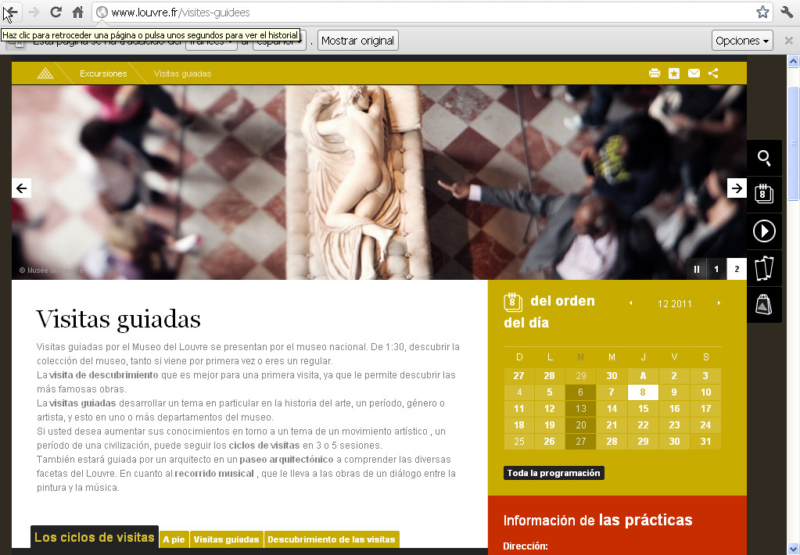
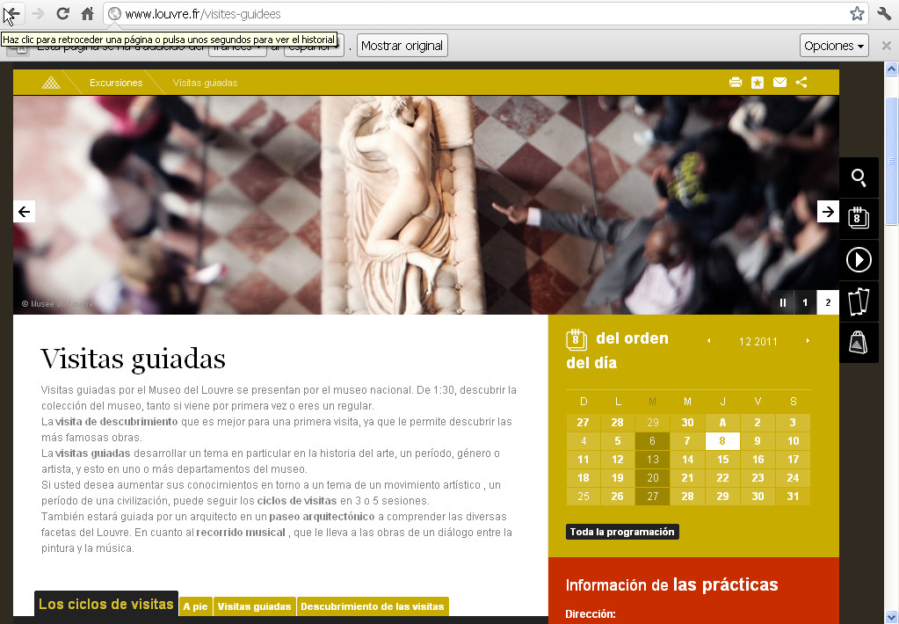

El idioma de la WWW
- La web elimina las fronteras. Por tanto, el acceso a información en otros idiomas es libre.
- Dominar varios idiomas es complicado. Desenvolverse en una web o ver un video realizado en un idioma que no conocemos, o incluso uno que dominemos medianamente, puede convertirse en una tarea engorrosa.
- Lengua inglesa. Una parte muy importante de la web está realizada en este idioma.
Webs internacionalizadas
Existen algunas páginas web que están desarrolladas en múltiples idiomas, y son capaces de mostrarnos el contenido en el idioma que deseemos.
- ¿Cómo saben qué idioma han de mostrar? En función del idioma del navegador, por ejemplo.
- Podemos elegir otros idiomas. Suelen tener un pequeño menú de selección de idiomas.
- Poco habitual. Por desgracia, este tipo de webs no es lo habitual que encontraremos en la web, debido a su alto coste de desarrollo y mantenimiento.

Cambia de foto con las teclas: ↑ y ↓
Práctica
Accede a la web de la GVA y comprueba cómo puedes cambiar de idioma con el selector correspondiente.
Traductores en la web
Imaginemos que necesitamos acceder a una información que está accesible exclusivamente en otro idioma.
- Traductores automáticos. Podemos utilizar la traducción automática de páginas (texto), e incluso en Youtube existe un traductor/subtitulador de vídeos.
- Diccionarios en línea. Si queremos algo más clásico, podemos hacer uso de un diccionario en línea que nos ayudará con determinadas palabras/frases. Existen gratuitos y de pago.
Traducción con Chrome
El navegador chrome incorpora una característica que nos permite traducir una página simplemente seleccionando la opción correspondiente del menú contextual.
- Navegamos por una página en un idioma extranjero.
- Pulsamos el botón derecho en una zona en blanco de la página que queremos traducir y elegimos la opción "Traducir al español".
- Veremos la misma página pero en español. La traducción no es ni mucho menos perfecta, pero puede sacarnos de algún compromiso.
 

Cambia de foto con las teclas: ↑ y ↓
Práctica
Accede a la página del Museo Louvre y utiliza la traducción automática. ¿Sabrías encontrar los precios de la entrada al museo?
Traductor en el buscador
Cuando realizamos una búsqueda en Google nos dará la posibilidad de ver traducidas aquellas páginas web de los resultados que estén en otro idioma.
- Realizamos una búsqueda..
- Si la web está en otro idioma, aparecerá el enlace de 'Traducir esta página'.
Cambia de foto con las teclas: ↑ y ↓
Práctica
Accede a Google y busca lo siguiente: "New wonders of the world". Utilizando la interfaz del buscador, accede a la página traduccida.
- Mira como busco, descargo y envío a toda la clase una foto de una maravilla del mundo.
- Busca y descarga ahora tú una foto de una maravilla del mundo que te guste y responde al correo que te he enviado para enviársela también al resto de la clase.